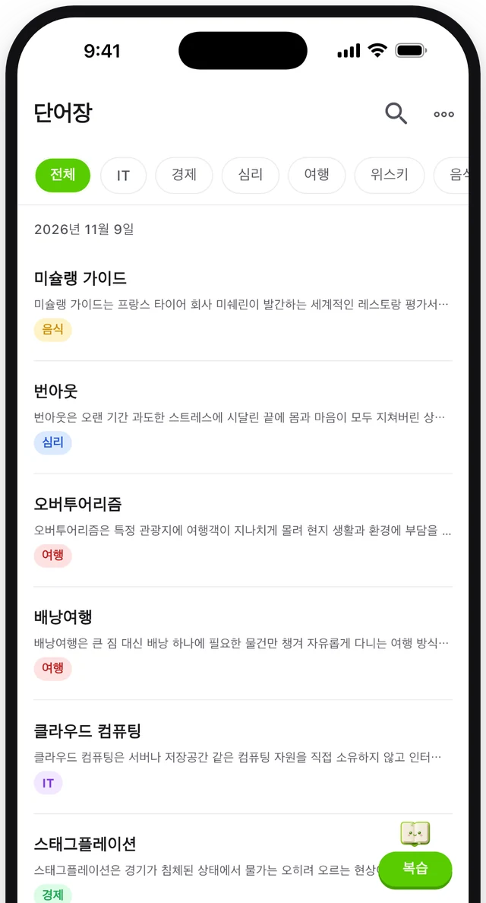
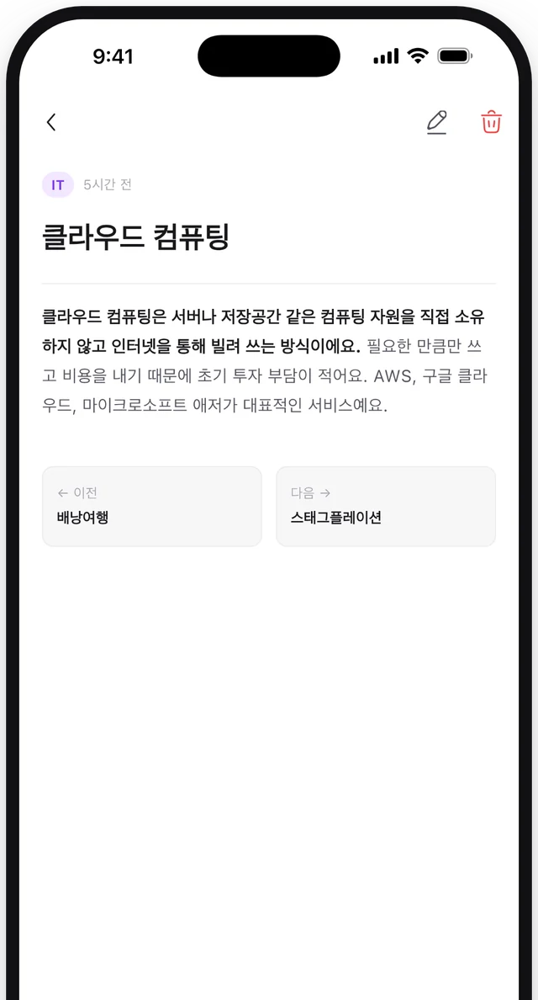
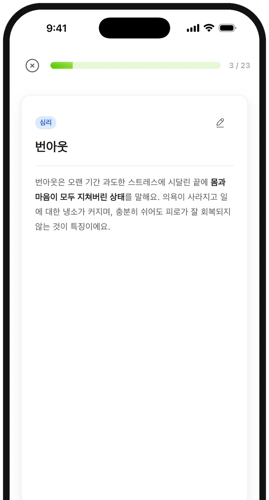

나만의 단어장
주제별로 차곡차곡
나만의 지식사전
날짜별로 정리되고 카테고리로 모아볼 수 있어. 여러 단어를 골라 AI로 한 번에 재분류하는 것도 가능해.

핵심 정리
꼭 알아야 할 문장은
굵게 한눈에
설명 속 핵심 문장이 강조돼서 다시 볼 때도 금방 이해돼. 좌우로 넘기며 단어를 하나씩 복습할 수 있어.

복습
탭 한 번으로
뜻을 바로 확인
단어장의 [복습] 버튼을 누르면 바로 카드 복습이 시작돼. 한 번 탭하면 정답, 한 번 더 탭하면 다음 단어.
